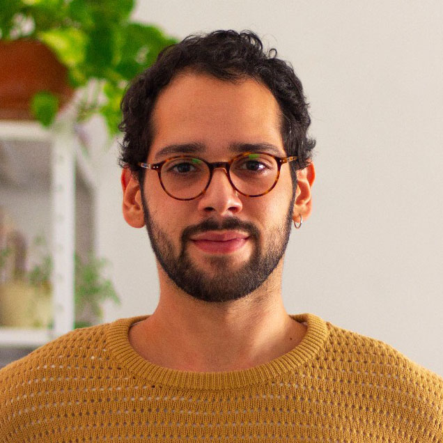

about me
I'm a visual designer, mostly dedicated to digital design. I have designed web layouts, illustrations, visual identities, user interfaces and also worked as a front-end developer. My work is comprised of editorial and institutional projects.
My passion for design was born in the journalism college. Instead of writing, I was focused on making content beautiful and easy to read. I started studying and working as a designer, learning from each and every place I've worked for.
In the beginning of my career, I worked mostly as a graphic designer. In the last five years, I shifted my focus to digital design, learning about user experience, user interface, digital content and front-end development.
For me, form and content are inseparable. And the goal of good design is merging these two dimensions in a way that its work is indistinguishable.